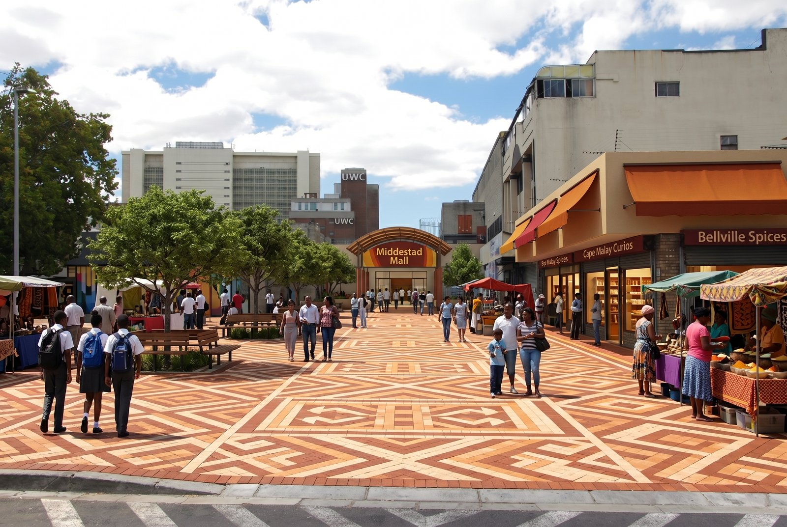
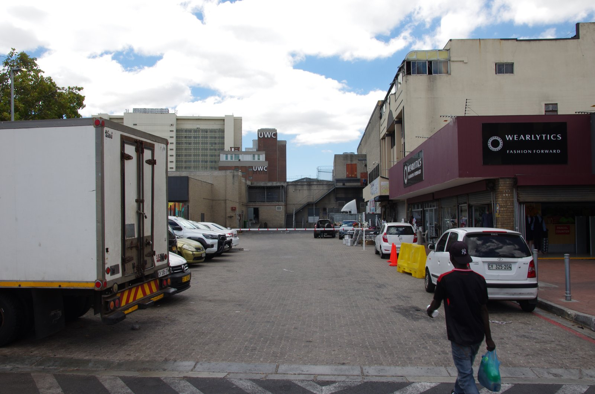
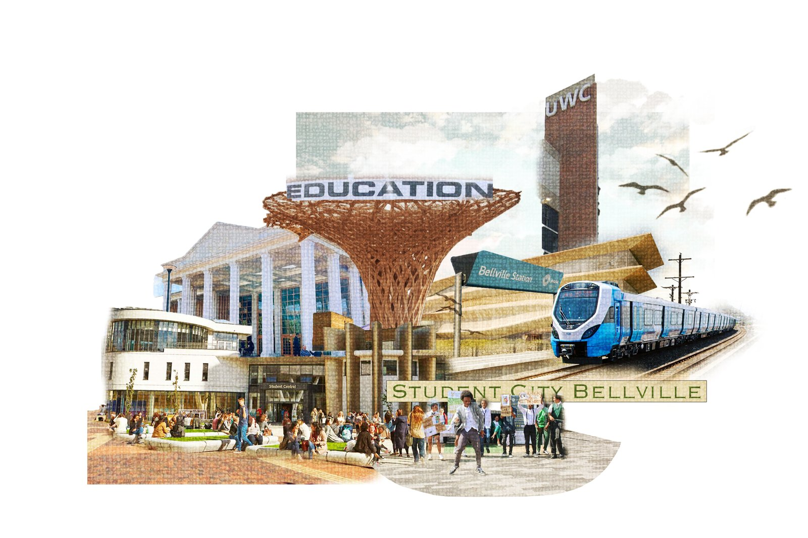
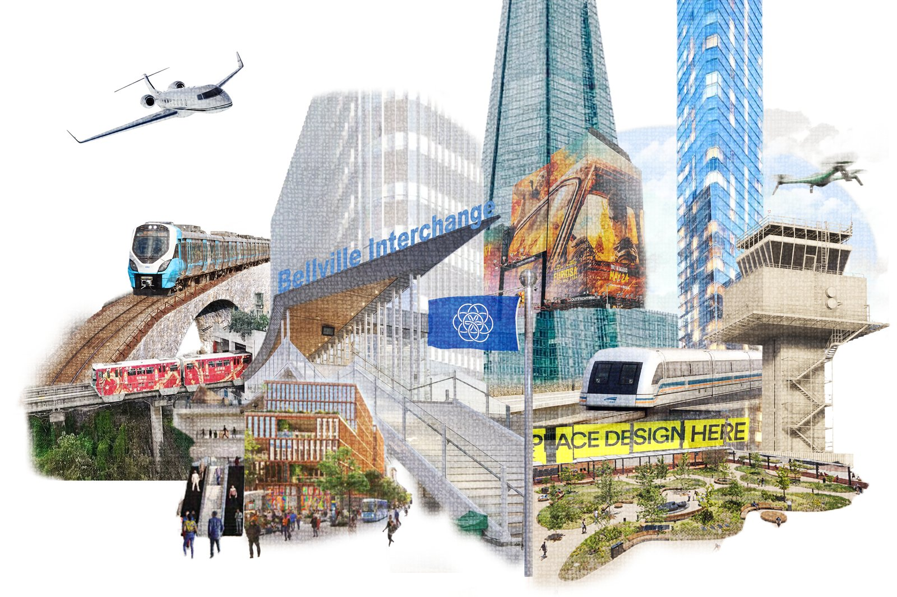
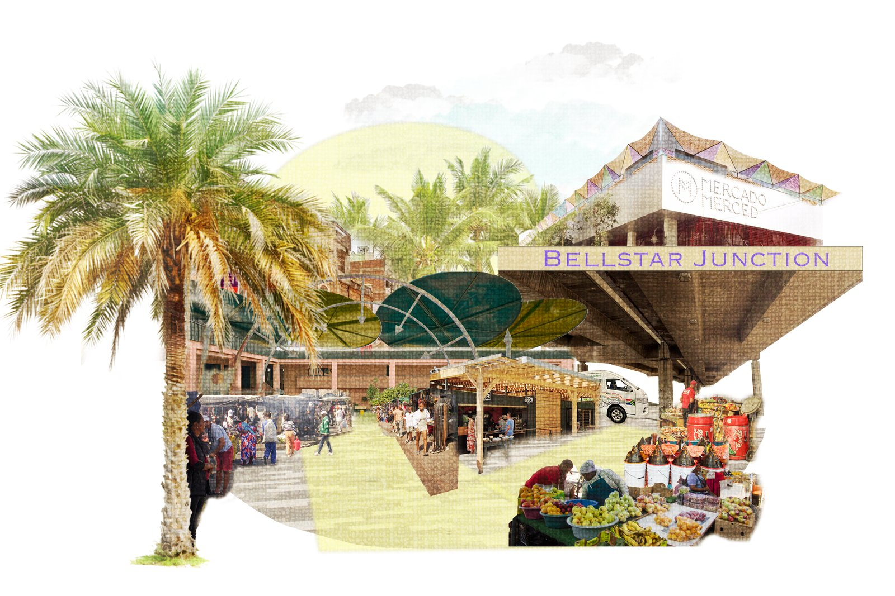
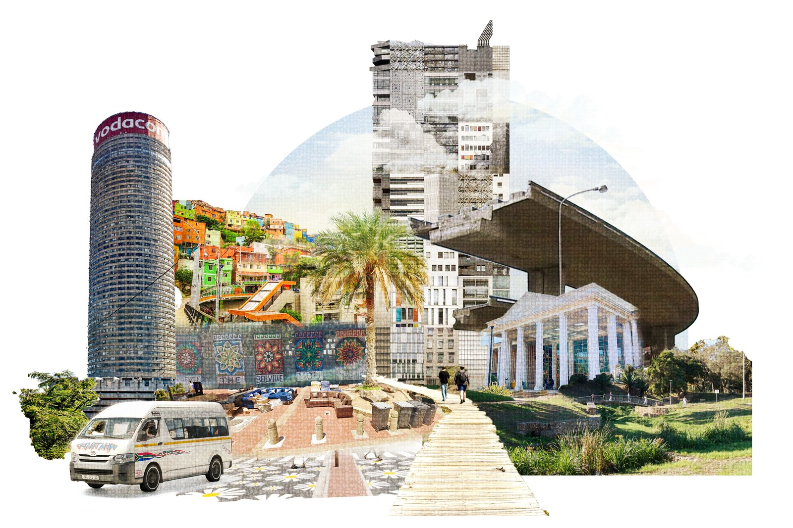
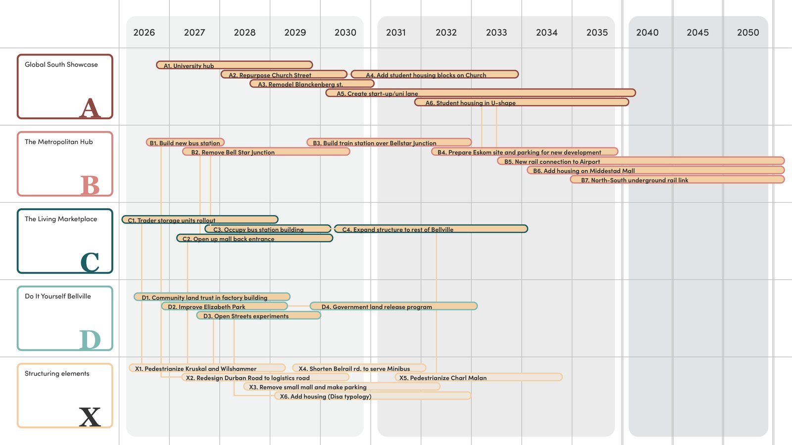
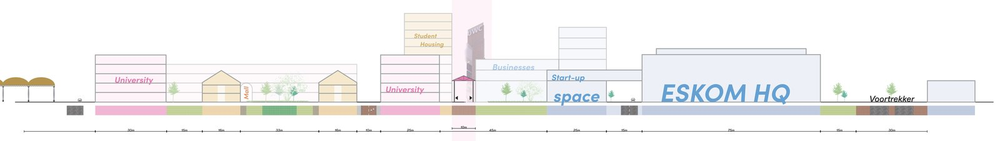
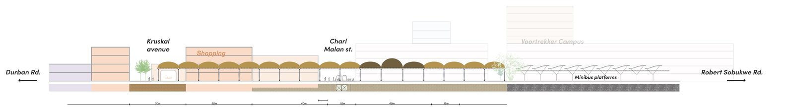
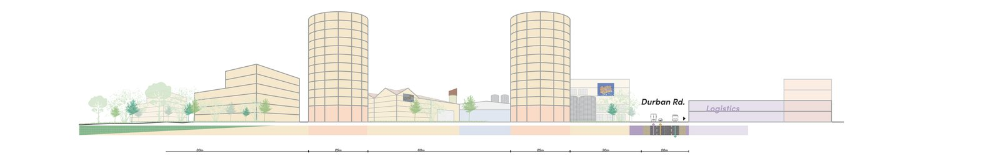

A graduation project on what binds a divided city together.

Bellville, on the eastern edge of Cape Town, is a place of contrasts: a major transport hub, student city, trading node and commuter town layered onto a fragmented urban fabric. My graduation project asks how those contrasting realities can become opportunities for connection.
Across two study trips I combined fieldwork, interviews, spatial analysis and scenario planning, and found that informal trade acts as the urban glue binding the district together. Building on that insight, I developed Common Ground: a research-by-design framework that works with Bellville’s existing energy instead of replacing it, and shows how a divided urban environment can grow a shared identity.
Graduation committee: Tess Broekmans (mentor), Eric Frijters, Martin Sobota.








